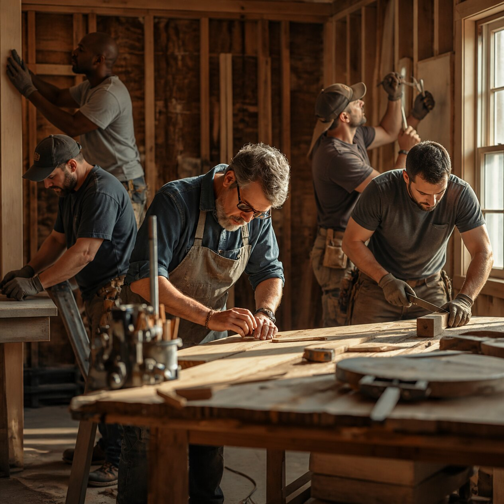

Om oss

Bosse och brödernas Bygg är ett familjeföretag i Göteborg. Det började 2004 när Bosse Karlsson och hans bröder Lasse och Erik bestämde sig för att starta eget efter många år som anställda snickare.
I dag är vi fem snickare och har renoverat och byggt fler än 400 hem i Västra Götaland. Vi är fortfarande ett litet företag - och det är med flit. Du ska alltid veta vem som kommer hem till dig och vem du ringer om du har frågor.
Vi som arbetar här
-
Bosse Karlsson
Gör hembesök och offerter och är din kontaktperson under hela projektet.
-
Lasse Karlsson
Har monterat hundratals kök och är noggrann med varje detalj.
-
Erik Karlsson
Har behörighet från Byggkeramikrådet och ansvarar för alla våra badrum.
-
Samuel Mensah
Leder våra tillbyggnader och attefallshus från grund till tak.
-
Johan Lind
Bygger altaner, trädäck och pergolor och kan allt om olika träslag.
Trygghet för dig som kund
- Godkända för F-skatt
- Ansvarsförsäkring och allriskförsäkring för alla uppdrag
- Behörighet från Byggkeramikrådet (BKR) för arbete i våtrum
- Alla medarbetare har ID06-kort
- Skriftligt avtal enligt Hantverkarformuläret 17
- 5 års garanti på utfört arbete
Här arbetar vi
Vi tar uppdrag i Göteborg med omnejd, bland annat Bollebygd, Borås, Sandared, Fritsla, Skene och Kinna. Bor du längre bort? Kontakta oss så ser vi om vi kan hjälpa dig.
Miljö och hållbarhet
Vi sorterar allt byggavfall, väljer svenskt virke när det går och renoverar hellre än river. Det är bättre för miljön och ofta billigare för dig.